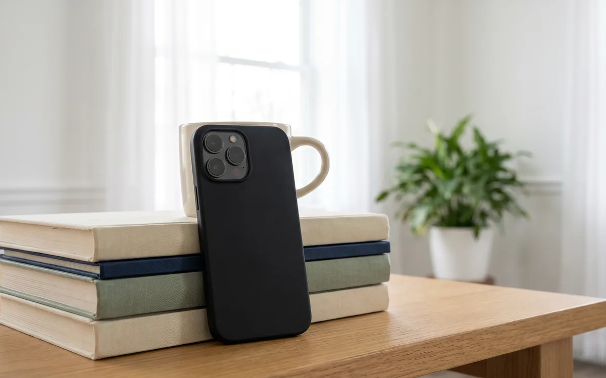
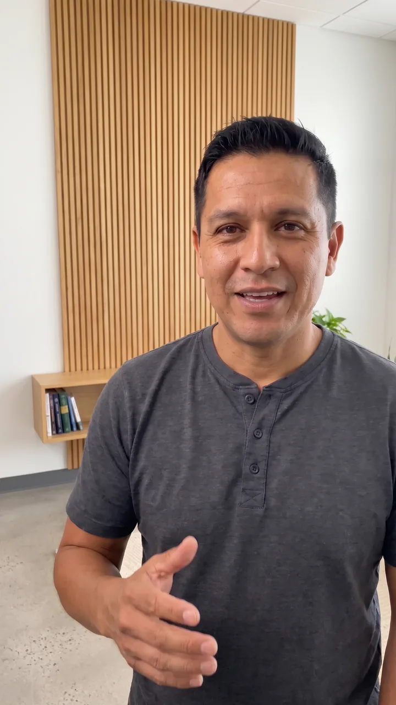
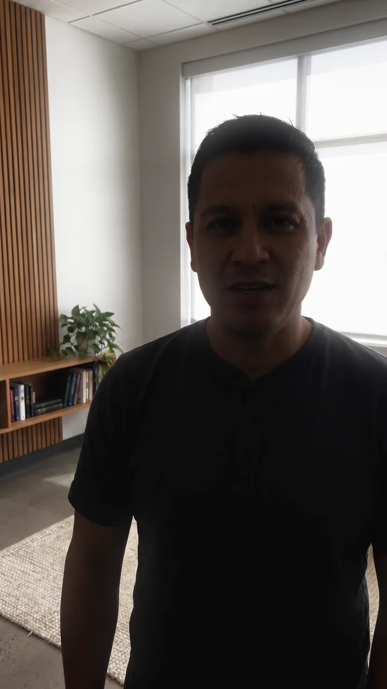
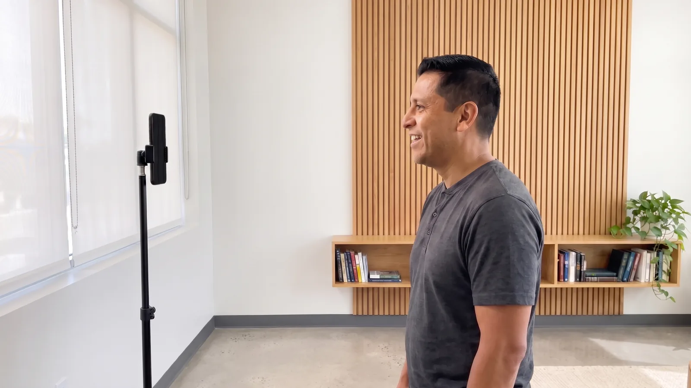
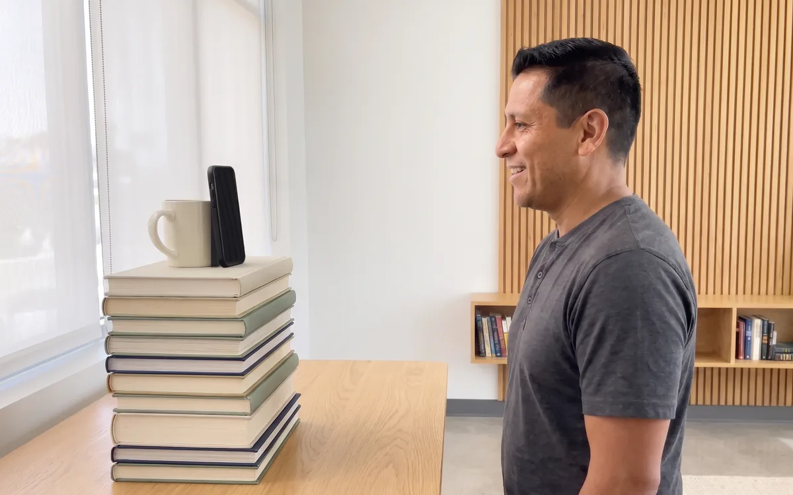
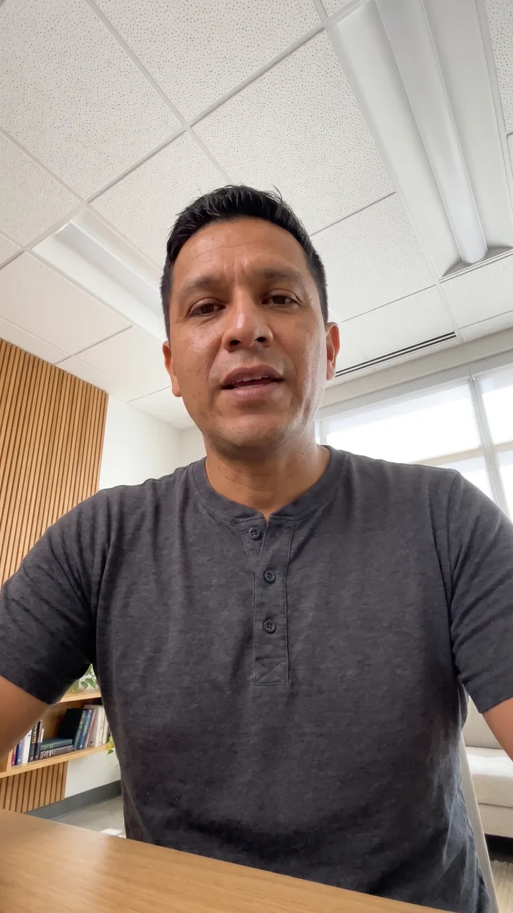
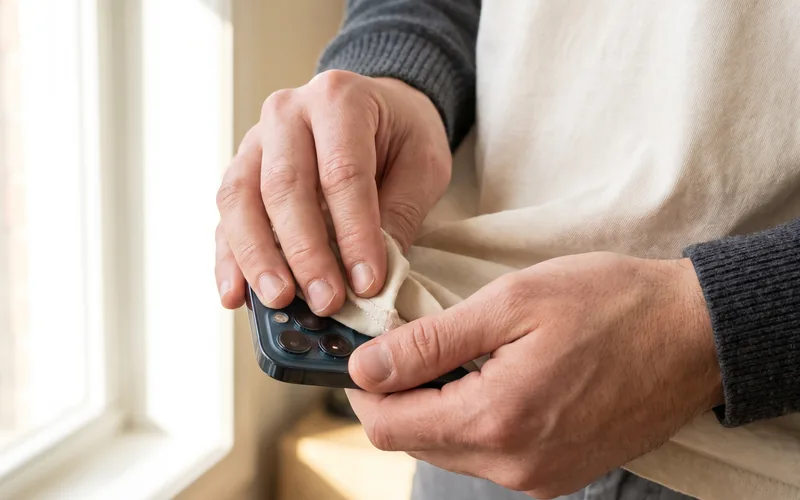
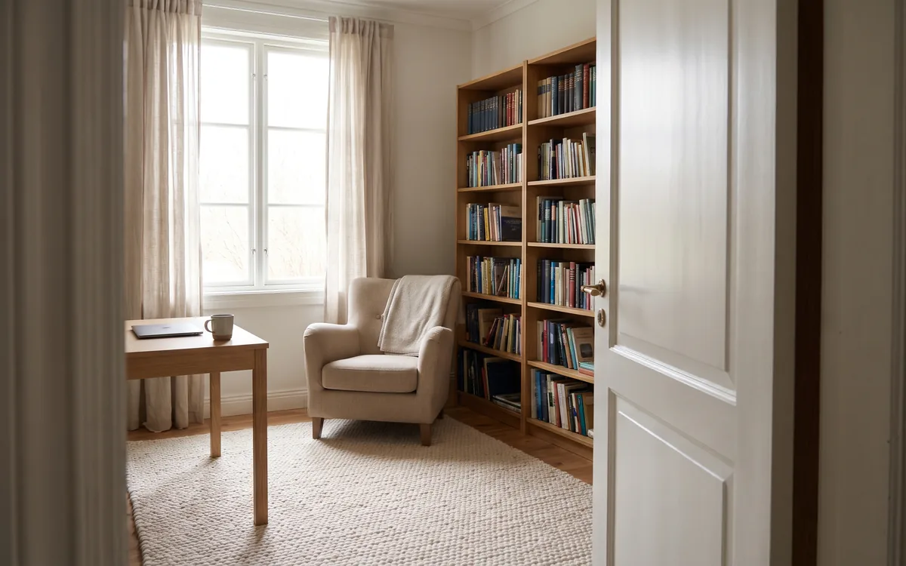

Film your invite videos in one take
Fifteen minutes with your iPhone and a window. You read the scripts we send, and we edit the rest.
- One recording
- No editing on your end
The whole guide in about a minute. The steps below fill in the details.
The plan
Four steps from script to finished invitation
-
1Big Splash
We send your scripts
Short invitations written for your church, with your service times in them.
-
2You
You record one take
Read the scripts back to back on your iPhone. This page shows you the setup.
-
3You
You send the file
Upload the original recording. Big files are fine.
-
4Big Splash
We edit, you approve
We cut each invitation and add captions. Nothing goes out until you say yes.
Before you start
Grab these six things
-
Your iPhoneCharged, with 5 GB free
-
A windowDaylight beats any lamp
-
A tripod or a stack of booksHands off the phone
-
Your scriptsFrom our email
-
A quiet roomWith a door you can shut
-
A soft clothFor the lens

Find your light
Light does more for your video than the camera does. A window gives you the best light in the building, and it's free.


Do this
- Face the window. Stand two or three steps back from it, with the phone between you and the glass.
- Film in the daytime. A cloudy day works well, since clouds soften the light.
- Switch off the ceiling lights once the window lights your face. Ceiling lights put shadows under your eyes.
- Check behind you. A tidy wall or a bookshelf a few feet back looks great.
Skip this
- A window behind you. The phone exposes for the glass, and your face goes dark.
- Sun straight on your face. Pull a sheer curtain across, or pick a window on the shady side.
Set your phone
Set it upright at eye level, an arm's length away. Then take your hands off it.

1Upright 2Lens at eye level 3An arm's length- Turn the phone upright. Families watch your invitation full screen on their phones.
- Raise the lens to your eyes. A tripod works. So does a stack of books on a shelf.
- Stand an arm's length away, about three feet. The phone's microphone hears you best from there.
- Frame yourself from the chest up, with a little room above your head.

Frame it like the one on the left
Your eyes sit on the top third of the screen. Your shoulders fill the bottom. A phone set too low points up your nose and films the ceiling.
Standing gives you more energy than sitting. Wear the clothes you'd wear on a Sunday, in solid colors. Thin stripes shimmer on camera.

Two minutes in Settings
Set your phone for its best video
Open Settings and search for Camera. These six checks give us the sharpest file to edit.

- Record Video4K at 30 fps
- HDR VideoOff
- Focus (Control Center)Do Not Disturb on
- Storage5 GB free
- BatteryAbove 50%, or plugged in
- The lens above your screenWiped clean
Pick a quiet room
Families forgive a plain background. They scroll past a video they can't hear.

- Choose a small room with soft things in it. A rug and a full bookshelf soak up echo.
- Shut the door and tape a note on it: "Recording, back in 15."
- Turn off the music, and any fan you can hear.
- Stand still and listen for ten seconds. Your phone records any sound you can hear.
Skip this
- The empty sanctuary or lobby. Big rooms with hard floors echo.
- Outdoors on a windy day. Wind on the microphone drowns out your voice.
Own a clip-on microphone? Use it. Without one, your phone's own microphone does the job from an arm's length away.
Load your scripts into a teleprompter
A teleprompter app scrolls your script beside the camera lens while you record. You read, and your eyes stay on the families you're inviting.
Our pick
Edits, from Instagram
- Download Edits from the App Store and sign in with an Instagram account.
- Open the camera inside Edits and flip to the front camera, so you can see the screen.
- Open the teleprompter and paste in the scripts from our email, one after another.
- Drag the text to the top of the screen, right under the lens.
- Make the text big and the speed slow. Read it through once before the real take.
- After you record, export the video and save it to your Photos at the highest quality Edits offers.
Want the text to follow your voice?
PromptSmart Pro listens and scrolls at your pace, and it waits while you pause. It costs $29.99 once on the App Store.
Filming without an app?
Read one sentence off a page, then look up at the lens and say it. Repeat for each line. We cut the pauses.
A sample script on a sample screen. Your app's buttons look a little different.
Record one take
Press record once and read your scripts back to back. Leave the mistakes in. Cutting them out is our job.
- You reading
- Two quiet seconds
- A mistake we cut
While the camera rolls
- Smile for two seconds before your first word. We need that quiet stretch to start the cut.
- Pause two seconds between scripts. Smile, then start the next one.
- Tripped on a line? Stop and say that sentence again from its first word. Keep recording.
- Hold your smile for two seconds after your last word. Then stop the recording.
Sound like yourself
- Talk to one family. Picture the couple you greeted at the door last Sunday.
- Change a word that feels stiff. The script is a guide, and your own phrasing sounds better.
- Got five more minutes? Read the whole set a second time in the same recording. The second pass comes out warmer.
- Past ten minutes? Stop and start a second recording. Send us both.
Right before you press record
Eight checks, thirty seconds
Tap each one as you go. All eight ticked means you're ready.
Check it, then send it
Play back the first ten seconds with the sound up. A bright face and a clear voice mean you're done.
Fastest
Upload the original file
Pick the video from your Photos and it uploads to our editors. Large files are fine, and you can close the page once it finishes.
Upload your recordingPrefer a link? Share the file from iCloud or Google Drive and email us the link.
Keep the quality
Send the file the camera made
- Skip texting it. Messages and WhatsApp shrink a video to a blur.
- Skip filters and trims. Raw footage gives our editors the most to work with.
- Recorded twice? Send both recordings. We pick the best read of each script.
After you send it
You've done your part. We take it from here.
We cut each invitation
One recording becomes a set of short videos, built from your best read of each script.
We add captions
Most families watch with the sound off, so your words go on screen.
We add your details
Your service times and your logo go on screen, over music that fits your church.
You approve each one
You see each video first. Nothing reaches a family until you say yes.
Questions pastors ask
Before you film
Do I need to memorize the scripts?
No. A teleprompter app scrolls the words beside the lens while you read. Without an app, read one sentence off the page. Then look up and say it. We cut the pauses.
Front camera or back camera?
Use the front camera with a teleprompter, since you need to see the screen. Filming with a helper and no teleprompter? Turn the phone around. The back camera is a little sharper.
Can I film on an Android phone?
Yes. The setup and the one-take plan stay the same. Set your camera to its highest video quality and use a teleprompter app from the Play Store.
Should I turn the phone sideways?
Keep it upright. Families see your invitation on Facebook and Instagram, and an upright video fills their whole screen.
Does the pastor have to be the one on camera?
Your pastor makes the strongest invitation, since a family meets that same face on Sunday. A warm staff member or a longtime member works too. Tell us who's reading and we'll fit the scripts to them.
I get stiff on camera. Any advice?
Stand up and talk to one family. Smile before your first word. Then read the set a second time. Most pastors loosen up on the second pass, and we use the best read of each script.
My recording has mistakes in it. Should I start over?
Send it. A repeated sentence takes our editors seconds to fix. We ask for a new recording if your face is dark or your voice is hard to hear.
Fifteen minutes on your iPhone. We handle the rest.
Stuck on a step, or not sure your room works? Send us a ten-second test clip and we'll tell you what to change.